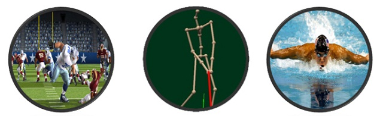
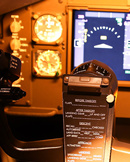
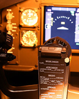

Motion capture is no longer a mystery and people are starting to understand that it is motion capture that brings the animated characters in films alive. And computer game developers frequently use motion capture to bring realism to the movements of characters.
Impressive visual effects displayed in films have brought motion capture to the main stream film industry. With motion capture and tracking technology are widely used in 3D animation , game or movie field , greatly reducing the workload of special effects conventional processing. But technology in the entertainment industry has always been geared towards large production houses with deep pockets. Most of the tools that are used in productions can cost millions of dollars.
It is our goal to turn motion capture into a common tool even the smallest production company can afford. We have achieved all of this, without sacrificing any quality. And our motion capture systems can be used by big studio projects and smaller independent productions.

On the other hand, theme parks and other entertainment facilities can also use the mocap to bring an interactive element to their attractions. And game developers can use motion capture to be User interface for TV games and PC games such as ARPG (role playing), STG (shooting), SPG (sport) and MUG (music).
Applications include enhancing sports performance, physical rehabilitation, medical research and development.
Noitom motion capture systems are used for various purposes by researchers and product developers in Movement Science. The combination of high accuracy and ambulatory use are beneficial for use in biomechanics research, sports science, rehabilitation and ergonomics. With a variety of products of different configurations and IMU fidelity the systems are a great addition to Biomechanical Studies.
At the core of each of these applications is sports training, as athletes compete to do the impossible and need technology to help them improve their performance or stay healthy. the trainer can study the most subtle aspects of an athlete's motions. From golf to batting to gymnastics to running, there are a variety of uses for motion capture technology in the sports world. Capture player's posture and motion and create digital database for playback, analysis, and comparison. Improve sport skills by accurate data analysis rather than empirical methods.
Motion tracking data is analysed by professional sport coaches to improve movement capabilities and techniques of participants in sports such as; golf, tennis, football and baseball. It can be learned to refine techniques and can provide a critical edge at the highest level.
motion capture systems help during rehabilitation and recovery from adverse events impairing the patient mobility. Motion capture data can assess the effectiveness of prosthetic implants and aid in developing improvements.
Motion capture systems take an important role in serious medical applications helping health care professionals understand nuances of human motion. The accuracy of the data enables the systems to be used in medical research facilities all over the world.
Our mocap enable you to recreate lifelike interactive experiences reducing overall costs, provides immediate feedback to merit design changes without build, and proves an invaluable tool for teaching and educating.
Motion capture data is increasingly used in the field of military training and research. The range offers wireless options allowing motion capture data to be recorded in all environments and terrains making it perfect for analyzing combat simulations, leading to improved training techniques and developments in military equipment.
Unity is an integrated authoring tool for creating 3D video games or other interactive content such as architectural visualizations or real-time 3D animations. The real-time driver enables motion capture to be streamed live into Unity delivering real time editing capabilities. Our motion capture equipment is ideal for accurate and fast data capture.
Augmented reality (AR) is a perfect industry for our motion capture technology. This live view of a physical, real-world environment whose elements are augmented by computer-generated input such as sound, video, graphics or GPS data is the ideal industry to benefit from our motion capture systems. By contrast, virtual reality replaces the real world with a simulated one. In both cases accurate motion capture data is a key tool in the future of AR and VR.
Noitom supplies miniature MEMS based IMU motion sensors for industrial applications, such as surveillance stabilization, robotics and unmanned aircraft system control.
 
